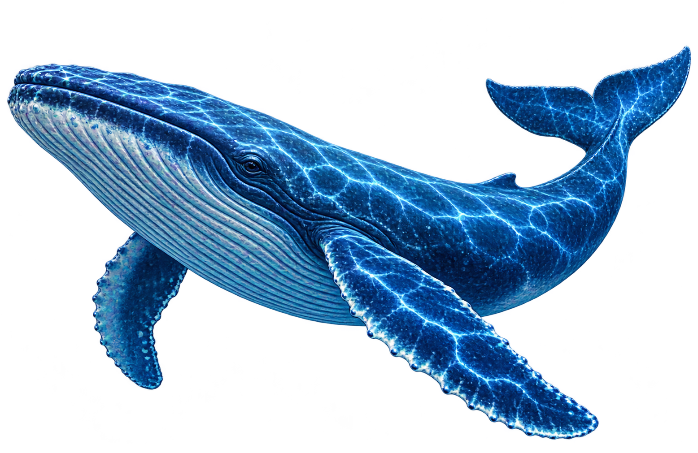
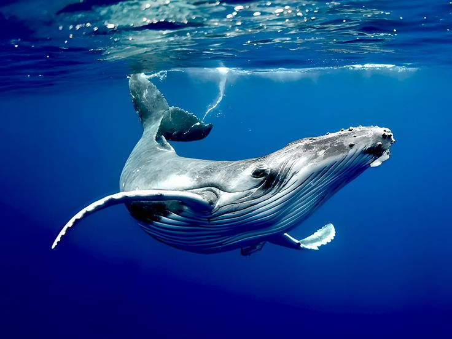
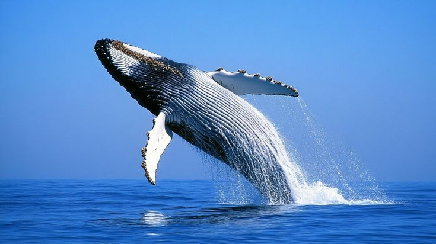
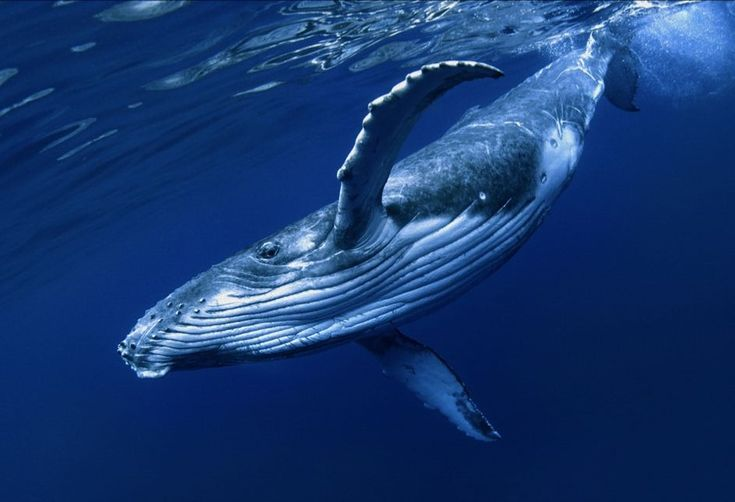

Baleia Azul
Balaenoptera musculus
A baleia-azul é o maior animal do planeta e pode atingir tamanhos impressionantes. Vive em oceanos de diversas partes do mundo e é conhecida por seu corpo azul-acinzentado.

Curiosidades
Alimentação
Alimentam-se principalmente de pequenos crustáceos chamados krill.
Tempo de vida
Podem viver entre 70 e 90 anos na natureza.
Grandes viajantes
Podem percorrer milhares de quilômetros durante suas migrações.
Nascimento
As fêmeas dão à luz geralmente a um filhote, que é alimentado com leite pela mãe.
Importantes para o ecossistema
Ajudam a manter o equilíbrio dos oceanos e contribuem para o ciclo de nutrientes.
Habitat
Vivem em oceanos profundos de todo o mundo, principalmente em águas frias.


Você Sabia?
A baleia azul é o maior animal já conhecido no planeta e pode produzir sons que percorrem grandes distâncias no oceano.
